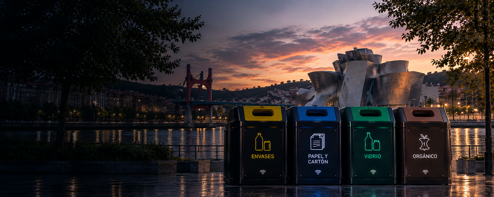

ODS 11 - Ciudades y Comunidades Sostenibles
Nuestro proyecto se enfoca en: Ciudades y Comunidades Sostenibles, a través de la implementación de contenedores de basura inteligentes que optimizan la recogida de residuos, reducen la contaminación y mejoran la eficiencia urbana.
Conoce más sobre Nuestro proyecto
Nuestro proyecto a varios ODS para un futuro mas sosntenible
Hacer que las ciudades y los asentamientos humanos sean inclusivos, seguros,resilientes y sostenibles
Garantizar modalidades de consumo y produccion sostenibles
Adoptar medidas urgentes para combatir el cambio climático y sus efectos
Construir infraestructuras resilientes promover la industrialización inclusiva y sostenible y fomentar la innovacion
Cómo los contenedores inteligentes de ecocontenedores controbuyen al ODS11 y a otros objetivos

busca el contenedor más cercano,consulta su estado y contribuye a una ciudad mas limpia
Ir al buscador de contenedores